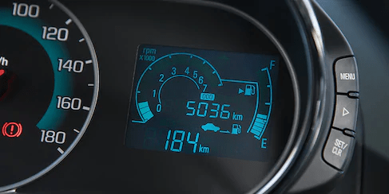
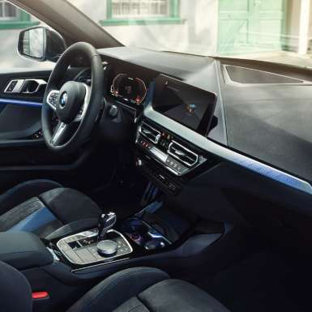

Las versiones del BMW Serie 1.
Cifras preliminares de valores de rendimiento de combustible y emisiones de CO2 basadas en el ciclo ECE, las cuales se obtuvieron en condiciones controladas de laboratorio, que bien pueden no ser reproducibles ni obtenerse en condiciones y hábitos de manejo convencionales, debido a condiciones climatológicas, combustible, condiciones topográficas y otros factores.
El exterior deportivo y el diseño interior del BMW Serie 1. Autoridad reconocible al instante: el diseño del nuevo BMW Serie 1 deja una poderosa impresión por dentro y por fuera. Empezando por el dinámico frontal con su gran parrilla doble y su amplia fascia. A lo largo de la línea del techo continua corren de forma paralela los contornos claramente definidos hasta llegar a la distintiva zaga.
El carácter superior del BMW Serie 1 continúa hasta el interior. Aquí los pasajeros pueden disfrutar de una atmósfera de bienestar generosamente proporcionada y abierta. La cabina impresiona con las opciones de equipamiento ergonómicamente optimizadas y su diseño sistemáticamente orientado al conductor.
Interior Moldura de entrada en aluminio con distintivo “BMW” Asientos deportivos para el conductor y copiloto en combinación Tela/Sensatec con acentos en Gris; otras vestiduras disponibles Volante deportivo de cuero Costuras decorativas en la parte superior del panel de instrumentos Acabados interiores iluminados en diseño Berlin; otros diseño disponibles